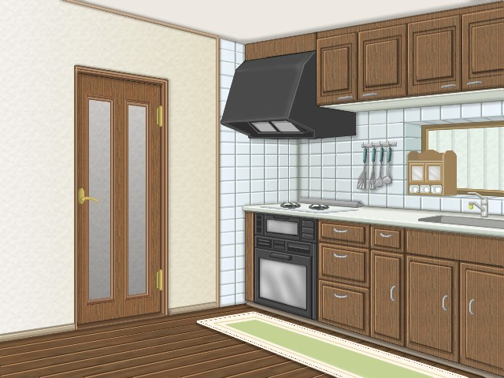
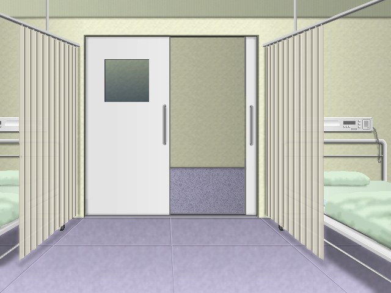
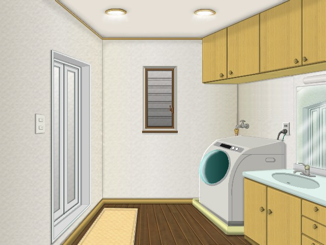

浅田：
「何度言えば解るの！？ そんな切り方じゃ危ないでしょ！」
裕二：
「わぁってるよぉ！ 一々煩いなぁ〜
浅田：
「なんですか！ その言い草は！？」
パチィン！
裕二：
「んぎゃ！！ 危ないだろぉ！？ 包丁使っているのにぃ〜！！」
浅田さんは、俺の包丁の使い方が危ないと言って、俺のお尻を思い切り引っ叩いた。
でも、そんな事されたら、かえって危ないってもんだ！
浅田：
「あなたがチャンとしないからよっ！ ほら、お料理って物はね、ただ味が良ければいいってもんじゃないのよ！
チャンと、見た目も大事なの！ ほらほら！ 大きさが揃ってないわよっ！！」
裕二：
「別に、そんなのいいじゃん！ 腹ん中に入れば一緒だろぉ？」
浅田：
「んもぉっ！！」
パチィ〜ン！！
裕二：
「んぎゃはっ！！ あぶ、危ないってぇ！！」
また浅田さんの大振りビンタが炸裂！
思わずお腹を前に突き出すように、浅田さんのビンタを避けようとするが効果はなし・・・・
浅田：
「叩かれたくないのなら、チャンとしなさいっ！！ それになんですか、その言葉遣いは！？」
裕二：
「あぁ〜もぉ〜
裕二は今日も一人、浅田さんに料理の特訓を受ける事になっていた。
愛は今、一人で買い物に出掛けている。
テテペルは、裕二の実家で母親のルルペルと一緒に居る。
美鈴と清子は、３ヶ月前から高校へ通うことになって、今は二人とも女子高生をしている。
ってわけで、裕二は今一人で、”女の子修行”を浅田さんからワンツーワンで受けているって事なのだ。
だから、寝るとき意外は、ずっと浅田の監視のもとでの行動ってわけで、裕二にとって辛い暮らしとなっていた。
だが、もう裕二にとって限界がきていた。
浅田：
「ほらぁ！ また大きさが変わってるじゃない！ 何度言えば・・・・」
裕二：
「んもぉ―――！ こんなの嫌だぁ〜！！」
浅田：
「あっ！？」
ドンガラガッシャァ〜ン！
浅田：
「きゃぁ！ あ、何を！？」
裕二は、包丁で切っていた野菜をまな板ごと流し台に投げ込んだ。
裕二：
「もぉ〜こんな所、出て行ってやるぅ！！」
浅田：
「あっ！ 待ちなさい！ ゆうさん！！」
ダダダダダダッ！ カチャカチャ・・・・カチン！ バタン！
浅田：
「・・・・！？」
裕二は素早く浅田のエプロンのポケットから、
玄関のロックを外す器具を抜き取り、玄関の鍵を開けて施設を飛び出してしまった。
裸足のまんまで・・・・
浅田は、突然の事に呆然としていたが、はっ！と我に返り慌てて裕二を追いかけて出て行った。
だが、裕二を見付ける事は出来なかった。
浅田は、愛に連絡し、愛が戻って来てから二人で裕二を探して回った。
その頃、裕二は・・・・
裕二：
「いてて・・・・
裕二は、何も考えずに施設を飛び出したものだから、いつしか見知らぬ場所にまで来てしまった。
裸足で飛び出して来たものだから、足の裏が痛くて歩くのが辛い・・・・
そこで目に入った公園に入り、ブランコに腰掛けて、ただボォ〜としていた。
裕二：
「はぁ・・・・どうしよう？」
裕二は、”女の子修行？”が辛くて、たまらず施設をとび出してしまったが、これからどうしたものかと悩んでいた。
裸足だし、お金も持っていないし・・・・
すると、突然雨が降り出し、裕二の服は一気にずぶ濡れになってしまう。
裕二：
「うわぁっ！！ なんだよもぉ〜
裕二は、公園内の小さな東屋の中へ入り、雨宿りをする。
でも、公園内は砂地になっているため、裸足の足はドロドロに・・・・
服はビショビショ。 足は泥で汚れて、見っとも無い姿だ。
裕二：
「はぁ・・・・俺、何やってんだろ？」
ここんところ、女の子修行ばかりで、魔女修行なんて全くしていなかった裕二は、
今の状況から、魔法で対処しようなんて事が出来ない。
せめて、”ゆき”のように物体転移魔法でも使えたならいいけど、まだ誰にも何も魔法は習っていないので使えない。
テテペルを呼ぶにしても、どうせ施設を逃げ出した事を、母親に言いつけるに違いないと思い、やめた。
今から施設に戻るにしても、どんな顔して戻ればいいのか・・・・
実家に戻ったとしても、どうせまた施設に戻されてしまうだろうから同じ事だ。
でも、どっちにしても方向音痴の裕二にしてみれば、今自分が居る場所すら解らないのに、
どうする事も出来ないのが、正直なところ・・・・
裕二：
「はぁ〜・・・・
裕二は、ただ東屋の中の椅子に腰掛け、深い溜息をついていた。
すると、大学生くらい？の男性が傘をさして、裕二の居る東屋の中へやって来た。
そして、裕二に声を掛けてきたのだ。
男性：
「ねぇ、どうしたの？」
裕二：
「ふぇ？」
年恰好は、裕二と同じくらいか？
でも、男の頃の裕二よりも背が高く、体もガッチリとした、ちょっとふっくら気味の男だ。
だが、なんだか嫌な予感がした。
なにしろ、男は必要以上に周りを気にしている？
それに、なぜかソワソワしているように見えた。
なんだかヤバイかも？・・・・そう裕二には感じられた。
男性：
「・・・・・ねぇ、もしかして、お母さんと逸れちゃったとか？」
裕二：
「ふぇ？ そんなんじゃないよ。」
男性：
「そうか。 でも、どうして裸足なんだい？」
裕二：
「これは！ 別に・・・・」
男性：
「・・・・そぉ？ でも、本当は帰り道が解らないんじゃないのかい？」
裕二：
「そうじゃないよ！ ただ・・・・」
男性：
「・・・・ただ？」
裕二：
「・・・・なんだっていいだろう？」
男性：
「ふ・・・・でもそれより、そのまんまじゃ風邪をひいちゃうよ？」
裕二：
「・・・・かもね。」
男性：
「お兄さんの、部屋に来るかい？」
裕二：
「ぇえっ！？ い、いいです
ピチャピチャピチャ・・・・
裕二は、すごく嫌な予感がした。
とにかく、男の側から離れなきゃ！ そう思った。
そして、東屋から飛び出して雨の中を駆け出した。
だが・・・・
裕二：
「んみゃぁ？！」
突然裕二は、後ろから羽交い絞めにされた！
裕二の嫌な予感が当たってしまったのだ。
裕二はバタバタと足を振り回すが体が小さいせいもあって、男の手から逃れることができなかった。
男性：
「静かにしろっ！！」
裕二：
「んんっ！？ ん゛ん゛〜〜〜！！！」
バシャバシャバシャバシャ・・・・！
口を押さえられて抱え上げられてしまった裕二には、どうにもできない。
裕二には、何が起きたのか理解できなかった。
口は押さえらているが、目は塞がれていないので見える。
激しく揺らされながらも、裕二を抱えて走る男の行く先が分かった。
裕二：
「んん！？ んんんん〜〜〜〜！！！」
男性：
「大人しくしろっ！」
裕二：
「！？」
どうやら、男の車に向かっているようだ。
まさか！？ まさか俺、連れ去られようとしているのか！？ これってまさか誘拐？！
嘘だろぉ〜おい！！ でも、間違いなく男の車らしき方向へ向かっている。
そして思ったとおり、男は俺を後部座席に乗せようとする。
俺は必死になって、抵抗した。
このまま連れ去られてしまうと、男に何をされるか解ったもんじゃない！！
それに最悪な場合、イタズラされた挙句に最後は殺されて・・・・
いやだぁ〜〜〜！！！ まだ死にたくない！！
裕二：
「いやぁ〜〜！！ やめてぇ！ 放してぇ！！」
男性：
「煩い！ 早く乗れっ！」
裕二：
「いやっ！ いやいやいやぁあぁあぁ〜〜！！！」
男性：
「くっ！ このぉ！！」
ドスッ！！
裕二：
「きゃふっ！！・・・・んっ・・・・」
男は、俺の鳩尾に拳をねじ込んだ。
強烈な痛みが襲ってくると同時に、意識が薄れてゆく・・・・
そのとき、遠くから他の男性の声が聞こえた。
誰だろう・・・・？
お巡りさん：
「こらっ！ お前、何をしている！！」
男性：
「ぐっ！ ちきしょう！ もう少しだったのに！！」
ブンッ！ ドシャ！！
裕二：
「きゃはっ！！」
ブロロロロ〜！！
俺は雨の中、外に放り出された。 アスファルトの地面に叩きつけられ、脇腹に激痛が走る。
殴られた腹部と脇腹の痛みで、息すらまともにできず苦しくて痛くて、ただ耐えるしかなかった。
そんなとき、声を掛けてきたのはお巡りさんだった。
お巡りさん：
「大丈夫かい！？」
裕二：
「ぐっ・・・・んぐ・・・・痛い・・・・」
お巡りさん：
「あ、君！ 大丈夫か！？ しっかり・・・・し・・・・も・・・・・・・・・」
裕二：
「・・・・・・・・・・・・・・・・」
お巡りさんが、裕二に必死に話しかけているが、段々とその声も遠ざかってゆく・・・・
裕二は、そのまま気を失ってしまった。
・・・・・・・・・・・・・・・・・・・・・・・・・・・・・・・・
・・・・・・・・・・・・・・・・・・・・・・・・・・・・
・・・・・・・・・・・・・・・・・・・・・・・・
・・・・・・・・・・・・・・・・・・・・
・・・・・・・・・・・・・・・・
・・・・・・・・・・・・
・・・・・・・・
・・・・
気が付くと、病院のベッドの上だった。

裕二：
「ん・・・・んん・・・・」
浅田：
「はっ！ 気が付いたのね！？」
愛：
「良かった・・・・ゆうちゃん・・・・心配したんだから。」
お巡りさん：
「良かったですね。 ですが、本当なら始末書ものですよ！」
浅田：
「はい
愛：
「・・・・」
お巡りさん：
「それより・・・・残念ですが、犯人は特定できませんでした。 車も盗難車だったようです。」
浅田と愛：
「そうですか・・・・」
お巡りさん：
「では、今後はこの様な事の無いように。」
浅田と愛：
「有難う御座いました・・・・」
裕二：
「・・・・」
そう言って、お巡りさんは病室から出て行った。
裕二を襲った男は、初めから少女を誘拐してイタズラをするつもりだったようだ。
その男が乗っていた車も、お巡りさんが言うところによると盗難車だったようである。
たまたま公園で一人で居た裕二が、その男の標的にされたようで、元々最初から裕二を狙っての犯行ではなさそうだ。
だが、何はともあれ、裕二は無事に事なきを得る事ができた。
その後、診察の結果、打撲と風邪だけだったので、そのまま施設に帰れる事になった。
そして、施設に戻って・・・・
ガチャ！・・・・パタン！
浅田と愛：
「ただいまぁー！」
ダダダダダダダダ！！
裕二：
「！？」
裕二が無事戻ってきたことを知った皆が、玄関へ駆け込んできた。
美鈴：
「ゆうちゃん！ 大丈夫！？」
裕二：
「！！・・・・美鈴ちゃん・・・・」
清子：
「バカチビっ！ こんな雨ん中、なにやってんだよ！！」
裕二：
「清子・・・・」
ゆき：
「んもぉ〜ほんっとに心配したんだからぁ〜！」
裕二：
「ゆきさん・・・・」
浅田：
「とにかく、上がりなさい。 冷えた体を温めなきゃ！」
愛：
「そうですね。 ほら、ゆうちゃん？」
裕二：
「・・・・うん。」
美鈴と清子とゆき：
「・・・・」
俺は、愛さんに背中を押されて自室で着替えたあと、愛と一緒にリビングへと向かった。
そしてリビングのソファーに、浅田さんと向かい合うように腰掛け、
浅田さんは俺だけではなく、 みんなに聞かせるように、話し始めた。
浅田：
「ゆうさん？ どうして、こんな無茶な事をしたの？」
裕二：
「・・・・」
浅田：
「あなたが、ここで暮らすのを嫌がっているのは解っています。 でもそれは、あなたが・・・・」
裕二：
「解ってます！」
愛と美鈴と清子とゆき：
「！！」
浅田：
「じゃぁ、なぜ？」
裕二：
「俺・・・・もう耐えられないんです！ 立派な魔女としてではなく、女として訓練を受けている事が・・・・」
みんな：
「・・・・」
この頃になると美鈴と清子は、俺と、愛さんと、浅田さんと、ゆきさんが魔女だと言う事を知っていた。
実はこれは俺が原因である。 女の子修行ばかりを受けているのに疑問をもち、
俺が勝手に、初歩的な魔法の練習を自室で一人で行っていたところを、美鈴と清子に見付かってしまったのだった。
いつも、女の子修行ばかりで、魔女修行なんて一度もさせてくれなかったので、
このままではいつまで経っても、俺は魔女として腕を上げる事も魔法を覚える事も出来ないと思ったからだ。
浅田：
「・・・・でも、それはあなたが立派な魔女として・・・・」
裕二：
「じゃぁ、どうして魔法を教えてくれないんですか！？」
浅田：
「！ それは・・・・」
裕二：
「ゆきさんは、魔法クラブで魔法を練習しているって言うのに、なぜ俺はダメなんですか！？」
浅田：
「・・・・」
愛：
「それは、ゆうちゃんのお母さんが決めた事で、魔女修行よりも、先ずは女の子修行が先だからって・・・・」
裕二：
「そんな事！・・・・だからって、いつも母さんの判断が正しいとは限らないでしょう？」
ゆき：
「！・・・・
裕二：
「えっ！？・・・・・」
ゆきさんが言うのも解る。
でも、俺にとっては女の子修行も魔女修行も、本当はどうでもいい事であり、
実際にはその先の、完全な男に戻る魔法を開発するのが最終目的であって、
今の時点の女の子修行も魔女修行も、ただの通過点にすぎない。
だからもし、その通過を省けるものなら、今すぐ完全な男に戻れる魔法が覚えられるのなら、
俺はこんな女の子修行などしない。
裕二：
「・・・・でも、だからってこのままじゃ・・・・」
浅田：
「何も変わっていないって言いたいんでしょう？」
裕二：
「！！・・・・そ、そうです！ 今だってそう！ もうここへ来て半年にもなるのに、今の俺は、どう変わりましたか？
何も変わってないじゃないですか！？」
ゆき：
「それは、あんたがその気にならないから！ あんた自身が変わろうとしないからでしょ！！」
裕二：
「うっ・・・・いや・・・・う、うん！ そう！ でも、その気にならないのも当たり前ですよ！
だって、俺自身が納得も出来ないのに、こんな事やってても無駄だと思えるいじょう、
今の俺に、やる気など起こると思いますか！？」
みんな：
「！！・・・・」
そうなんだ。
俺は、ここへ来てからずっと思っていた事。
たとえ女の子修行が、女装剤の解毒剤を開発できるまでの立派な魔女になるために、
”女としての自覚”が必要な事だとは理解していても、
それは、男の姿では魔法の力が封印されてしまうからであり、女の子でないと魔女としての力が発揮出来ない訳で、
そのため、不本意ながら女の子の姿で居るのだ。 だからと言って女の子修行が、立派な魔女になるために、
本当に必要な事なのかという疑問があるから、俺は女の子として居る事に蟠りがある訳で・・・・
でも、浅田さんはこう言う。
浅田：
「でもね、今回あなたに起きた事について、あなた自身はどう思っているの？」
裕二：
「そんな事、今は関係無いでしょ！！」
浅田：
「大有りよっ！」
裕二：
「なんで！？」
浅田：
「・・・・いい？ よく聞いて！ あなたはなぜ、見知らぬ男に連れて行かれそうになったと思う？」
美鈴と清子とゆき：
「ぇえっ！？」
ゆき：
「チョットお母さん！！ それ、どういう事よ！？」
浅田：
「あなたは黙ってって！！」
ゆき：
「！・・・・」
美鈴と清子：
「・・・・」
愛：
「ゆうちゃん・・・・」
美鈴と清子とゆきは、裕二が男に連れ去られそうになった事を知らなかった。
ただ、雨の中を飛び出して、雨に濡れたために熱を出して倒れたとしか聞かされていなかった。
浅田：
「あなたが、なぜ男に連れ去られそうになったのか・・・・それは、あなたに女性としての自覚が足りないからなのよ！」
裕二：
「！？・・・・そんな事はありませんよ！ 俺は、チャンと今の自分は女だと・・・・」
浅田：
「本当に、そうかしら？」
裕二：
「？！・・・・そ、そう言う浅田さんも、なぜそう言い切れるんですか？」
浅田：
「そんな事、今のあなたを見ていれば解るわよ！」
バシィーン！
裕二：
ビクッ！！
愛達：
「！？」
浅田さんは、自分の膝を叩いて部屋中に響き渡るような大きな声で怒鳴る。
裕二も愛もゆきも、そんな浅田さんに一瞬怯えた。
浅田さんが大声を出した瞬間、途轍もない強力な魔力を感じたからだった。
体中が、ビリビリと感じるほどだった。
愛とゆき：
{{{{ビリビリビリ・・・}}}}
裕二：
「そん・・・な事・・・・」
浅田：
「もし、あなたにもっと女性としての自覚があったなら、もっと異性に対して警戒心があってもいいはず！」
裕二：
「！・・・・」
浅田：
「ゆうさん？ もし今、あなたが男性だった頃の男友達に会ったとしたなら、どんな対応する？」
裕二：
「・・・・？ どう言う意味ですか？」
浅田：
「もし、あなたの男友達が、あなたが一人で家に居るところを訪ねて来たとしたら？」
裕二：
「・・・・・・？ そりゃ、友達なんだから、今までどおりに話したりとか・・・・」
浅田：
「じゃぁ、その友達がゆうさんの家の中で話したいって言ったらどうする？」
裕二：
「もちろん、家に入れてあげますよ？ 俺の友達なんだから・・・・・」
浅田：
「ばかぁ！！」
バァン！！
裕二：
「ひっ！！」
みんな：
ドキッ！！
浅田さんは、今度ばかりは本気で怒っているようだ。
裕二に対して女の子修行をしているときよりも、明らかに表情も声も違う。
テーブルを思い切り叩いて、大声で叫ぶ。
そして、少し間をおいてまた話し始めた。
浅田：
「ほら見てごらんなさい！！」
裕二：
「あ・・・う・・・え？・・・・」
浅田：
「たとえ、その男友達があなたの気を許せる相手だったしても、もしその男友達があなたを女性として・・・・
いえ、この際ハッキリ言うわ。 もし、あなたの男友達が、あなたを性的対称としか見てくれない事になれば？」
裕二：
「せいてき・・・・たいしょぉ？」
浅田：
「まだ解らないの？ 今のあなたは女の子なのよ！！ もし、男に襲われる事にでもなったらどうするの！？
もし、最悪な事態になれば、女の子であるあなたでは、男の力には勝てないのよっ！！
そこをチャンと解ってるの！？」
裕二：
「！？・・・・でも」
浅田：
「私は、そこを心配しているの！！ 今回だって、そう！ もしあの時、お巡りさんが来てくれなかったら、
今頃あなたは、どうなっていたのか解らないのよ！！
もしあの犯人が、あなたを性的暴行を目的に連れ去ろうとしたのだったら？ もし、あなたが殺されていたら！？
今頃あなたは、ここには無事に居られなかったのよ！！ そこをチャンと解ってるの！？」
みんな：
「！！・・・・」
裕二：
「！・・・・」
浅田さんのその話を聞いたとき、俺は心のそこから震えた。
本当に、もしあの時お巡りさんが来てくれなかったなら、今頃俺はどうなっていただろうか？
それを考えると、怖くて体の振るえと涙が止まらなかった。
裕二：
「えふっ・・・・ふぇぇ・・・・すん・・・・すん・・・・」
浅田：
「解ったでしょ？ もう、無茶はしないで！」
愛：
「そうよ、ゆうちゃん！ もし、ゆうちゃんに何かあったら、私・・・・」
裕二：
「・・・・」
ゆき：
「そうよっ！ 私もそれは感じた。 男だった頃は親友だと思ってた友人が居たんたけど、
女になってから、ガラッと態度が変わったし、私を見る目も変わった。
すごく、いやらしい目で見るんだもん。 セクハラなんて日常茶飯事！
”お前は男だったんだから、こんな事されても何も思わないだろう？”だって・・・
もう、あんな奴友達なんかじゃない！・・・って思ったもの。
まぁ、今はお母さんや藍那さんや春江さんのお陰で戸籍も知人の記憶も書き換えているから大丈夫だけど・・・」
裕二：
「・・・・ゆきさん」
美鈴：
「私もそう。 男として暮らしていたときは、何とも思わなかったけど、
自分は本当は女なんだって解って、女の子として生きるようになったときから、
男達から変な目で見られるし、怖い目にも何度か遭った事があるもの。」
裕二：
「美鈴ちゃんも？」
清子：
「そうさ！ 男なんかに安易に近づいちゃ、酷い目に遭うぜ！ 男なんて信用しちゃダメだ！！」
裕二：
「清子・・・・」
愛：
「私だって、そうよ。」
裕二：
「！・・・・愛さんも？」
愛：
「うん。 昔は誰だろうと負けたりはしなかったけど、今は・・・・ね。 やっぱり、中には怖い人も居るのよ。」
裕二：
「・・・・愛さん」
愛さんまでも、そう言う。 俺なら、そんな野蛮な男になんかならない。
きっと、女性を守るような強い男になってみせる！でも、今は違う・・・・
今の俺は、こんな小っちゃな女の子。
まともに魔法も使えないから、何かあっても何も出来ない。
もし今後、今日の様な事が起きたとしたら？ 自分ですり抜ける自信なんて無い。
この日、初めて異性である男というものを、怖いと感じた。
裕二：
「すん・・・・すん・・・・えふっ・・・・
浅田：
「解ったわね？ 少しは懲りた？」
裕二：
「すん・・・・すん・・・・あい」
浅田：
「そぉ。 じゃぁ、今日はもうこのままお風呂に入って寝なさい。 愛さん、ゆうさんをお願い。」
愛：
「はい。 じゃぁ、ゆうちゃん。 お風呂に行こう？」
裕二：
「すん・・・・すん・・・・えぅ」
俺は、愛さんと一緒に、風呂場の前の脱衣場へ向かった。

愛：
「あ、チョット待っててね！ ゆうちゃんの着替えを持ってくるから。」
裕二：
「あの・・・・大丈夫ですよ。 俺、一人で出来ますから。」
愛：
「いいからいいから♪ 私にやらせて？」
裕二：
「！・・・・はぁい。 じゃぁ、お願いします。」
タッタッタッタ・・・・
愛さんは、そう言って俺の部屋へと向かった。
しばらく経って、愛さんは戻って来たけど、あれ？って思った。
俺の着替えだけじゃなく、愛さんは自分の着替えまで持ってきている！？
まさか・・・・！？
裕二：
「えっ！？・・・・愛さん？」
愛：
「えへへ。 今日は、ゆうちゃんと一緒にお風呂に入ろうと思って♪」
裕二：
「ぇえっ！？」
愛：
「いいでしょう？ 女同士なんだし〜たまにはね♪ だめ？」
裕二：
「い、いやあの・・・・だめって訳じゃないけど・・・・でも・・・・
愛：
「あれ？ もしかして、恥ずかしいの？」
裕二：
「そ、そりゃぁ恥ずかしいですよぉ！ だって俺は、元々は男だったんですよぉ！」
愛：
「でも、今は女の子じゃない？ うん？」
裕二：
「・・・・
愛さんは、そう言って首をかしげてニッコリと微笑む。
でも俺は、恥ずかしくて顔ばかりじゃなく、体中が熱ってる感じ？
俺だって、大好きな愛さんと一緒にお風呂に入れるなんて、舞い上がってしまいそうなほど嬉しい。
でも、いきなりこんな事になるなんて想像もしなかったもんだから、心の準備って言うか・・・・
愛：
「ほら、両手を上げてバンザイして！」
裕二：
「あっ！ ちょ、チョット待って！」
愛：
「いいからいいから♪ 大丈夫だってぇ〜」
裕二：
「何が大丈夫なんですかぁ〜
愛：
「ほら、グズグズしていたら、また浅田さんに叱られちゃうわよ！」
裕二：
「！！・・・・」
俺は、ヒヤッとした。 この施設で暮らすようになってからと言うもの、
毎日のように浅田さんに叱られ、お尻を思い切り叩かれている。
此間だって、数え切れないほどお尻を叩かれ、お風呂に浸かるとヒリヒリして仕方がなかったっけ。
それは、なんとか避けたいものだ。
でも・・・・
愛：
「ほら、ゆうちゃん！」
ガバッ！
裕二：
「きゃぁあっ！！」
愛さんは、いきなり俺の上着を引っこ抜くように脱がすもんだから、
俺は思わず、悲鳴のような叫び声を上げてしまった。
愛：
「あはは！ 何を驚いてんの？ ほら、シャツも脱いで！ あ、ポッチリも外さなきゃね！」
裕二：
「あ、チョット！ や、やめっ・・・・いやぁ〜〜！！ やめてぇ〜〜！！」
愛：
「あはははは！ いいからいいから
ポンッ！
裕二：
「あみゃぁ！？」
愛さんは、俺のポッチリを外す。 すると俺は猫耳に変身してしまう。
愛：
「あぁあぁ〜〜〜ん！ やっぱり、ゆうちゃん可愛い〜〜〜ん
裕二：
「ひぃあぁあぁ〜〜〜〜
愛は、そう言って俺を羽交い絞めするように抱きしめた。
愛は、猫耳になった俺が特にお気に入りのようだ。
そうなると、俺の体は一回り小さくなり、さらに思考もお子ちゃまっぽくなってしまう。
結局俺は、愛さんに素っ裸にされて、風呂場の中に入れられてしまった。

俺は、風呂場に入ったと同時に、シャワーで簡単に汗を流したら、そのまま湯船に浸かった。
チョット熱かったけど、恥ずかしくてそうするしかなかったし・・・・
すると間もなく、愛さんも風呂場の中へ入ってきた。
来たぁ！！ どどどどどどど・・・・どうしよう？ 憧れの愛さんが今、俺の側で裸で居る！！
それを考えると、一気に頭に血が上ってくる。
愛：
「ゆぅ〜うちゃぁ〜〜ん！ 先に、体を洗っちゃお〜よ？」
裕二：
「い、いいもん！ あ・・・・あああ後で自分で洗うにゃ！！」
愛：
「ぷ♪ そんな事言わずに〜♪ ねぇ、出ておいでったら！」
裕二：
「後で洗うにゃぁ〜 だから、先に愛姉ちゃんが洗ってにゃ！」
愛：
「うふ♪ 『愛姉ちゃん』かぁ〜♪ これがたまんないのよねぇ〜
裕二：
「・・・・
この頃には、裕二は猫耳になると、自然と愛の事を、『愛姉ちゃん』と呼ぶようになっていた。
これも、裕二が猫耳になって思考がお子ちゃまっぽくなってしまったからなのだろうか・・・・？
でも愛は、そんな裕二が一番好きらしい。 裕二にとっては男の自分を、好きになって欲しかったのだが・・・・
でも猫耳に成った今の裕二には、そんな事も思いつかないほど、思考はお子ちゃまになっているのだった。
愛：
「ほぉ〜ら！ 先に洗っちゃいましょ〜〜〜♪」
ジャバァ〜！
裕二：
「んみゃぁ〜！？ お、降ろしてぇ〜！！」
ジタバタジタバタ・・・・
愛さんは、俺の脇を持って、俺の体を軽々と持ち上げ、俺を浴槽の外へ出した。
俺は、猫耳になると体が随分と小さくなるから、簡単に持ち上げられてしまう。
愛：
「はい！」
ピチャッ！
裕二：
「！・・・・」
愛さんは、俺を湯船から出すと、タイルの上に降ろしてくれた。
愛：
「はぁ〜い！ 先ずはシャンプーからねぇ〜♪」
シャコシャコ・・・・ブクブクブクブク・・・・・
裕二：
「うんにゅ？！ あぶぶ・・・・」
愛は、ポンプ式のシャンプーを自分の手の中に出し、
手の平をこすり合わせてから、裕二の髪を洗い始める。
裕二はもう観念したのか、愛のされるままで居た・・・・
愛：
「チャンと、目を瞑ってるのよぉ〜？」
裕二：
「えう・・・・」
ゴシゴシゴシゴシ・・・・
裕二：
「んあっんっんっんっん・・・・・」
愛が裕二の頭をゴシゴシと洗う。
裕二の頭は、じっとしていられずゆらゆらと揺すぶられる。
裕二は言葉にならない声を出して愛のされるまま・・・・
愛：
「はい！ 流しまぁ〜っす！」
シャァ〜〜〜〜〜！
裕二：
「ぶぶぶぅ〜〜〜〜〜」
愛は裕二の頭の泡を、シャワーで洗い流す。
そのとき、口にシャンプーの泡が入ると思った裕二は、
顔にかかるシャンプーを流すシャワーの湯を吹き飛ばすように、
必死になって、ぶぶーと息を吹き出す。 口をシッカリ閉じておけば済む事なのに・・・・
やっぱり、猫耳に成った裕二は、考える事もお子ちゃまレベルである。
愛：
「はい！ 次はリンスね。」
裕二：
「えう・・・・」
シャコシャコ・・・・
愛は、シャンプーと同じように、ポンプ式のリンスを自分の手の中に出し、裕二の髪にリンスを馴染ませる。
愛：
「はい！ また流しまぁ〜っす！」
シャァ〜〜〜〜〜！
裕二：
「ぶぶぶぅ〜〜〜〜〜っぷぅ〜！ っぷぅ〜！！」
愛：
「はい！ 次は体を洗いましょうねぇ〜♪」
裕二：
「んみゃぁ！？ か、体は自分で洗うにゃよ！！」
愛：
「いいからいいから！ 大丈夫、大丈夫ぅ！」
裕二：
「・・・・
愛は、またお決まりの『大丈夫、大丈夫〜』と言って、無理やり俺の体を洗い始める。
でも、脇の下やおへその周りなんかを人に洗ってもらうと、メチャクチャくすぐったいのだ。
裕二：
「にゃははははは！ くすぐったぁいっ！！」
愛：
「あ、ゆうちゃん！ 動いちゃったら洗えないよぉ〜
裕二：
「くっひっひっひっひぃ〜〜！ だって、くすぐったいんにゃもん！」
愛：
「クスッ♪ でも、出来るだけじっとしていてね？」
裕二：
「あい・・・・」
もう、この時になると、裕二は不思議と愛を素直に受け入れるようになっていた。
なんだか、とてもいい感じ♪
今じゃ、まっ裸の愛を前にしても、全然変な気持ちにもならない。
なぜか、当たり前かのように感じていた。
今の裕二には、完全に男の思考なんて、出てこなかった。
愛：
「はい！ 出来上がりぃ〜♪ じゃぁ、もう一度浸かっててね。」
裕二：
「あい！」
((((ジャブジャブ・・・・))))
その後、裕二は愛が体を洗っているところを、ジーっと見ていた。 でも不思議と変な気持ちにはならなかった。
今の裕二は女の子だからなのか？ それとも猫耳っ娘だからなのか？ 裸の女性を前にしても興奮もしない。
Cat ear syndrome（猫耳症候群） きっと今の裕二の男の感情は、女の子の感情によって心の奥底へと隠されているのだろう。
愛は体を洗い終えると、裕二と一緒になって湯船に入ってきた。
そして愛は、５０を数えるように裕二に言う。
愛：
「じゃぁ、ゆうちゃん。 ５０を数えたら出ましょうね！」
裕二：
「あい・・・・」
愛：
「いい？ じゃぁ・・・・いーち！ にーぃ！ さぁーん！」
愛と裕二：
「しーぃ！ ごぉー！ ろーっく！ しーち！ はーち！ くーぅ！ じゅーぅ！・・・・」
そして、もうすぐ５０を数えるって頃、裕二はすっかりのぼせてしまっていた。
愛が、お風呂場に入ってくる前にも、裕二は湯船に浸かっていたのだから・・・・
愛と裕二：
「よんじゅいーち！ よんじゅーに！ よんじゅーさん！ よんじゅーし！・・・・」
裕二：
「よんじゅーし・・・・よんじゅー・・・・ごーじゅぅ・・・・」
愛：
「ぇえ？ あはは！ ゆうちゃん、ズルしちゃダメよ！・・・・ってあれ！？」
裕二は、真っ赤な顔がみるみる青くなり、頭をフラフラと揺らし始める。
数を数えるのにも、まるで酔っ払ったかのように、呂律が回らなくなってゆく・・・・
裕二：
「ごぉ〜じゅにぃ〜・・・・ろぉ〜くじゅぅ〜・・・・なぁ〜なじゅぅ〜〜・・・・」
愛：
「なっ！？ ゆうちゃん！ 大丈夫？ もういいから、出ましょう！！」
裕二：
「はぁ〜ちじゅぅ・・・・きゅぅ〜〜〜〜」
愛：
「きゃぁあ！！ ゆうちゃん！！」
裕二：
((((ブクブクブクブク・・・・・))))
裕二はまた、お風呂でのぼせてしまい、そのまま卒倒・・・・
裕二は猫耳になると、お風呂に弱くなる事を忘れていた。
そして気が付くと、裕二はベッドの中に居た。
たぶん、自分の部屋だと思う・・・・のだが、なぜかベッドの中には愛が居る？
なんで？ なんで愛さんが、俺と一緒に寝ているの？
まったく理解できなかったが、お風呂で意識が薄らいでいくのを思い出し、
また俺はお風呂でのぼせてしまった事を悟る。
愛さんは、俺を包み込むようにして抱くように寝ている。
きっと、倒れてしまった俺を心配して、結局眠くなって一緒のベッドで寝てしまったってとこだろう。
でも、この愛さんの柔らかい胸・・・・愛さんの温かさ・・・・愛さんの甘い香り・・・・
今は、これぜぇ〜んぶ俺のもの
俺は思わず、愛さんの胸に顔を埋めるようにして、愛さんに抱きついた。
すると、愛さんの腕に力が入り、ギュギュゥ〜と抱き締められてしまった。
裕二：
「んぎゅぅ！・・・・んん〜〜〜〜くるじぃ〜〜〜
すると突然！ 目覚ましが鳴り響いた！
ジリリリリリリリリ〜〜！！
愛と裕二：
「ひゃぁあ！！」
愛：
「ん！・・・・んん？・・・・・」
パチン！
愛：
「ふぅ〜」
愛さんは、布団の中から腕を伸ばし、目覚ましを止めた。
そして、俺を抱き締めている事に気付く。
裕二：
「ぐ・・・・ぐるじぃ〜〜〜〜
愛：
「あ！ ゆうちゃぁ〜ん！ おはよぉ〜〜〜♪」
ギュギュギュゥ〜〜〜〜
裕二：
「んぎぃいぃいぃ〜〜〜〜ぐるじぃ〜〜〜おぉ〜〜〜〜
愛：
「はっ！ ごめんごめぇ〜ん！！ 苦しかったぁ？」
裕二：
「ほっ・・・・♪ もう、大丈夫ぅ〜」
愛：
「じゃぁ、起きよっか？」
裕二：
「はぁい」
こうして俺達は、ベッドから降り、着替えを済ませ、洗面所で顔を洗ってリビングへ向かった。
するとなぜか、浅田さんがこんな事を言う。
浅田：
「あ、おはよう！ ゆうさん、愛さん！」
裕二と愛：
「おはよぉ〜ございまぁ〜っす！」
浅田：
「今日ゆうさんは、朝ごはんの仕度はしなくてもいいからね。」
裕二と愛：
「え！？」
裕二：
「・・・・あの、なんで？」
浅田：
「だって、今日は特別な日だから。」
裕二：
「へ？・・・・なんの？」
愛：
「あ！ あぁ〜あぁ〜あぁ〜そうでしたね！」
裕二：
「ふぇ？ 愛さん？・・・・何の事？」
美鈴と清子：
「ふふふふふ・・・・♪」
裕二：
「んみゃぁ？」
愛さんの様子からして、何か知っているようだった。
それに、美鈴ちゃんと清子も同じように、何かを知っている様子だった。
いったい、何の事だろう？ なんだか、メチャクチャ不安なんだけど・・・・
そして、浅田さんの口から、信じられない事が発せられる。
浅田：
「実はねぇ、明日からゆうさんも、学校へ通う事になったのよ！」
裕二：
「学校？・・・・ふぅ〜ん・・・・・んみゃぁ！？ がっこぉ〜！？」
浅田さんが言うには、こうだった・・・・
今の俺は、全然女の子としての自覚が足りないと言う。
そこで考えたのは、俺を美鈴や清子と同じ学校へ通わせ、そこで女の子の友達を沢山つくり、
女の子の友達と接する事で、俺自身が女の子として自覚できるようになれば・・・・という作戦だそうだ。
女の子同士で学び、女の子同士で遊び、女の子同士で同じ時間を過ごす。
それが今の俺にとって、女の子として自覚するのには一番早い近道なんだと考えたからだそうだ。
えぇ〜〜！？ でも、チョット待ってくれぇ〜！！
裕二：
「うっそぉ〜！？ なんで俺が、女子高生しなきゃいけないんだよぉ！？」
浅田：
「だから言ったでしょ！ それはあなたにとって、女の子として自覚するための一番の近道なんだって！！」
裕二：
「でも俺、今さら高校になんて入れませんよぉ！ 高校の授業になんて付いていけないよぉ！ 頭悪いのに・・・・
浅田：
「あ、大丈夫よぉ！ そこは、伸江と藍那と一緒に魔法で解決済み！」
裕二：
「はぁい！？・・・・また母さんが絡んでいたのか・・・・んもぉ〜
愛：
「はい！ 制服♪」
裕二：
「はい？・・・・はぁい！？」

愛：
「そんな顔しないで？ セーラー服はほら、ほうれん草で有名なアニメの『ポパイ』が着ていた服じゃない？
ポパイ ザ セーラーマーン♪ ぽっぽぉ〜！ なんちゃってね♪ そう思えばゆうちゃんも恥ずかしくはないでしょう？」
裕二：
「・・・・
愛さんが出してきたのは、セーラー服だった。
にゃにぃ〜！？ 俺がセーラー服ぅ！？ この俺に、セーラー服を着ろって言うのか！？
そりゃ確かに、セーラー服って元々はイギリス海軍のセーラーマンの軍服で、本当は男の服だったってのは聞いちゃいるけど、
でも今じゃ、セーラー服と言えば、一般的に小児や女学生の制服って事で世の中に定着している！
このご時世、こんな事すら知らない人が多いのも事実で、説明したって信じる者は居ないだろう。
なんて俺の気持ちを読んだのか、愛さんは言う。
いやだぁ〜〜〜！！！ そんなの恥ずかしくて着れないよぉ！！
愛：
「うふふ♪ 大丈夫よぉ！ ゆうちゃんは女の子なんだから、恥ずかしがる事なんてないの！」
裕二：
「いや・・・・そう言う問題じゃなくって・・・・
《ちがうんだよぉ〜
愛：
「それに、私も一緒にガッコへ行く事になったから。」
裕二：
「んみゃぁ！？ あい・・・・愛さんもぉ！？」
愛：
「うん♪」
浅田：
「そぉ〜なのよぉ〜
だから仕方なく、伸江と藍那に頼んで、戸籍と学校の生徒管理データを弄っちゃったのよね。」
裕二：
「・・・・
愛：
「まっ、そう言う訳だから、学校でもよろしくね！ ゆぅ〜うちゃん
美鈴と清子：
「・・・・
裕二：
「ひぃいぃいぃ〜〜〜！！ 嫌だぁ〜〜〜！ 行きたくなぁ〜〜い！！」
その後俺は、美鈴と清子と愛さんに、無理やりセーラー服に着替えさせられてしまい、
またシャメを、これでもかと言うくらい撮られるのだった。
裕二：
「いやぁ〜〜！ 行きたくなぁ〜い！！」
清子：
「いい加減に諦めろっ！！」
ポカッ！
裕二：
「いだぁあぁ〜〜！！」
清子は容赦なく俺の頭にゲンコツを繰り出す！ それほどダメージは無かったが・・・・
それより俺・・・・明日から学校だって？
とんでもない事になってしまった・・・・
もう二度と、机に向かって教科書とニラメッコなんてする事は、もうしなくてもいいって思っていたのに・・・・
こぃつぅあ〜何か手を打たないとヤバイなぁ・・・・本当に”じょしこーせー”にされちまう！
いやでも、”女子小学生”よりはマシか？・・・・ってバカぁ！ 俺ってば何を考えてんだぁ？
何か、『じょしこーせーにされるのを回避できる魔導具』 たるものを作って・・・
・・・・と、考えていたこの時、俺は思いついた。 きっと浅田さんも俺の母親と同じように、
満月の夜に月の光を浴びさせて魔力のパワーをチャージさせていたクリスタルを必ず持っているはずだと、俺は考えたのだ。
そのクリスタルさえあれば、今の俺にだってゆきさんと同じように、魔導具を作れるはずだ！
魔導具にする物なんて何でもいい。 例えば輪ゴムに魔導具の働きと効果をイメージし、
魔導具開発呪文はシッカリと思えているから、それを唱え、
後は自分の魔法起動呪文を唱えればいいんだ。 それでその輪ゴムでも何でもイメージした効果を持つ魔導具になるのだ。
俺は、朝の仕事を片付けてから、最後にお風呂洗いだけを残して、ある準備をしていた。
美鈴と清子とゆき：
「行って来まぁ〜っす！」
裕二と浅田と愛：
「行ってらっしゃ〜い！」
カチャ・・・・パタン！
美鈴と清子は学校へ、ゆきは仕事へ出かけて行った。
そのすぐ後、浅田さんと愛さんが買い物へ出掛ける事になった。
俺は、まだお風呂掃除が残っているのと、外出して猫耳に変身してしまう事を恐れて、留守番をする事になった。
うん！ 計算通りだ！
浅田：
「じゃぁ、行って来るから留守番をお願いね！」
裕二：
「あい。」
愛：
「ゆうちゃん、一人でも平気？」
裕二：
「大丈夫ですよ。 ホントに心配いりませんから。」
愛：
「・・・・そぉ？ じゃぁ行ってくるね。」
裕二：
「はぁ〜い！ 行ってらっしゃぁ〜い！」
カチャ・・・・パタン！
裕二：
「ふっふっふ♪」
裕二は、愛と浅田が出て行った玄関のドアを見詰ながら、ほくそ笑んでいた。